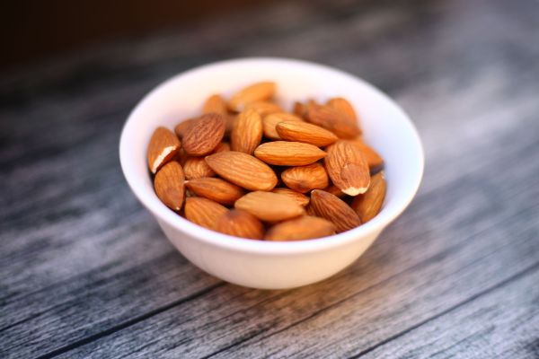

Att bjuda på sju sorters kakor är en klassisk
svensk fikatradition. Traditionen syftar på det
antal kaksorter som enligt äldre kafferepsetikett
skulle finnas på kakfatet.
Småkakor kan vara spröda, mjuka, chokladiga,
kryddiga eller fruktiga. De passar till kafferep,
högtider, kalas och vardagsfika.
Här hittar du sju kakor med bilder,
beskrivningar och recept.
En svensk fikatradition med sju sorters småkakor.
Våra sju kakor
Välkommen till kakfatet
1. Drömmar
Drömmar är klassiska småkakor som ofta har
en spröd konsistens och mild smak av vanilj.
Drömmar är spröda småkakor med vaniljsmak.
Ger: cirka 40–45 kakor.
Ingredienser
100 g smör
3 dl strösocker
1 dl rapsolja
2 tsk vaniljsocker
1 tsk hjorthornssalt
4 dl vetemjöl
Gör så här
Värm ugnen till 150 °C.
Rör smör och socker mjukt.
Tillsätt oljan lite i taget och blanda.
Blanda vaniljsocker och hjorthornssalt med lite av mjölet.
Rör ner blandningen och tillsätt resten av mjölet.
Forma små bollar och lägg dem på en plåt med bakplåtspapper.
Grädda i 15–20 minuter och låt kakorna svalna på plåten.
2. Finska pinnar

Finska pinnar dekoreras med mandel och pärlsocker.
Finska pinnar är spröda mördegskakor med mandel
och pärlsocker på toppen. De är en klassiker
på svenska kakfat.
Ger: cirka 60 kakor.
Ingredienser
200 g smör
1 dl strösocker
4,5 dl vetemjöl
1 tsk vaniljsocker
1 dl mandelmjöl
1 äggvita
1 dl hackad sötmandel
2 msk pärlsocker
Gör så här
Värm ugnen till 175 °C.
Blanda mandelmjöl, vetemjöl, socker och vaniljsocker.
Arbeta in smöret, skuret i bitar.
Låt degen vila i kylskåpet i 30 minuter.
Dela degen i åtta delar och rulla varje del till en längd.
Lägg längderna på en plåt med bakplåtspapper.
Vispa äggvitan lätt och pensla längderna.
Strö över hackad mandel och pärlsocker.
Skär längderna i bitar som är ungefär 4 cm långa.
Grädda i 10–12 minuter.
3. Hallongrottor
Hallongrottor är mördegskakor med hallonsylt.
Hallongrottor är mördegskakor med en liten grop
fylld med hallonsylt. De är enkla att baka och
uppskattade till fika.
Ger: cirka 20–24 kakor.
Ingredienser
200 g smör eller margarin
1 dl strösocker
2 tsk vaniljsocker
4,5 dl vetemjöl
1 tsk bakpulver
1 dl fast hallonsylt
Gör så här
Värm ugnen till 200 °C.
Arbeta snabbt ihop smör, socker, vaniljsocker, mjöl och bakpulver.
Rulla degen till små bollar och lägg dem i små kakformar.
Gör en grop i varje kaka med ett finger eller skaftet på en sked.
Fyll groparna med hallonsylt.
Grädda i 12–15 minuter och låt kakorna svalna på ett galler.
4. Kolasnittar
Kolasnittar har smak av sirap och vanilj.
Kolasnittar är avlånga småkakor som blir lite
sega och får smak av sirap och vanilj.
De skärs i sneda bitar efter gräddningen.
Ger: cirka 20 kakor.
Ingredienser
100 g smör
1 dl strösocker
2 msk ljus eller mörk sirap
2,5 dl vetemjöl
1 tsk bakpulver
1 tsk vaniljsocker
Gör så här
Värm ugnen till 175 °C.
Rör smör, socker och sirap mjukt.
Blanda mjöl, bakpulver och vaniljsocker.
Arbeta ihop mjölblandningen med smörblandningen till en deg.
Dela degen i två delar och rulla ut två längder.
Lägg längderna på en plåt med bakplåtspapper och platta till dem.
Grädda i mitten av ugnen i cirka 12 minuter.
Skär längderna snett i bitar medan de fortfarande är varma.
5. Schackrutor
Schackrutor har ett mönster av ljus och mörk deg.
Schackrutor är klassiska småkakor med ett
dekorativt rutmönster av ljus och chokladsmakande
mördeg. De ser festliga ut men är enkla att baka.
Ger: cirka 50 kakor.
Ingredienser
200 g smör
1 dl strösocker
4,5 dl vetemjöl
2 tsk vaniljsocker till den ljusa degen
2 msk kakao till den mörka degen
Gör så här
Låt smöret bli mjukt i rumstemperatur.
Vispa ihop smör och socker.
Tillsätt mjölet lite i taget och arbeta ihop degen.
Dela degen i två lika stora delar.
Arbeta in kakao i den ena delen och vaniljsocker i den andra.
Dela varje deg i två delar så att du får två ljusa och två mörka delar.
Rulla delarna till längder och platta till sidorna.
Lägg längderna tätt intill varandra, två ovanpå två, så att ett rutmönster bildas.
Låt degen vila i kylskåpet i 1–2 timmar.
Värm ugnen till 200 °C.
Skär degen i skivor som är cirka 3–4 mm tjocka.
Lägg kakorna på en plåt med bakplåtspapper och grädda i 8–10 minuter.
6. Havrekakor
Havrekakor är småkakor med havregryn.
Havrekakor har en mild smak av havre och en
lätt krispig yta. De passar bra till kaffe eller te.
Ger: cirka 32 kakor.
Ingredienser
175 g rumsvarmt smör
4 dl havregryn
2 dl strösocker
2 dl vetemjöl
2 tsk bakpulver
Gör så här
Värm ugnen till 200 °C.
Vispa ihop smör, havregryn och socker snabbt i en bunke.
Blanda vetemjöl och bakpulver i en separat skål.
Rör ner mjölblandningen och arbeta ihop allt till en deg.
Forma små bollar, tryck ihop dem och lägg dem på en plåt med bakplåtspapper.